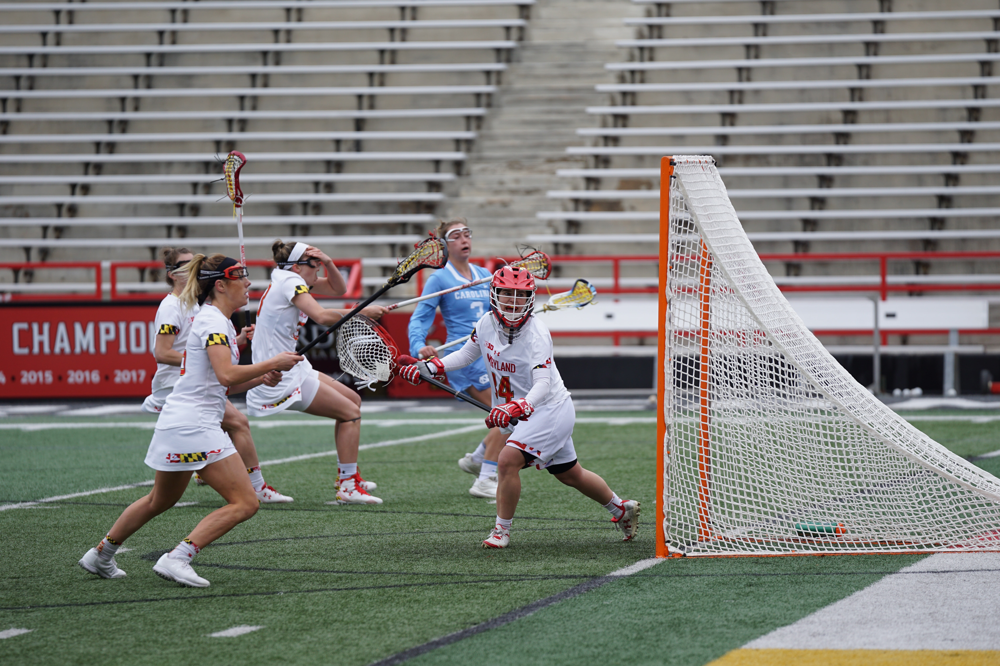
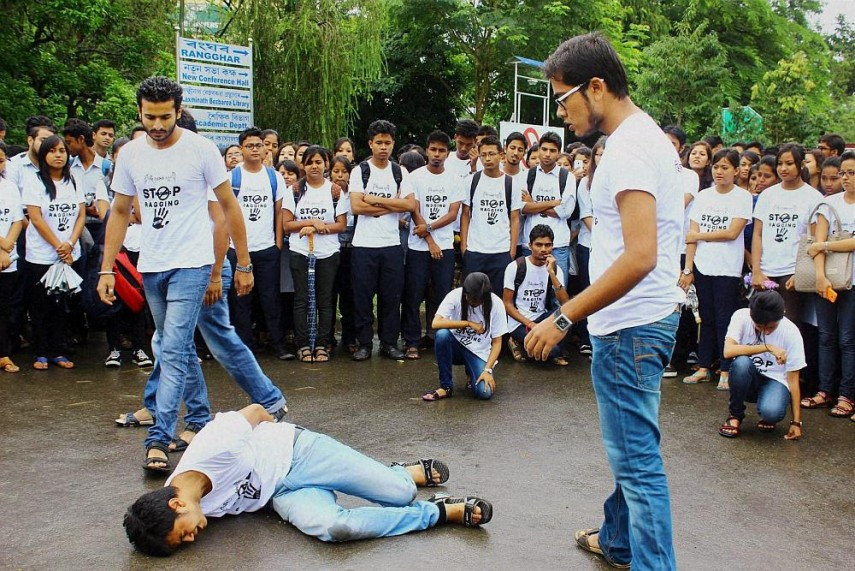
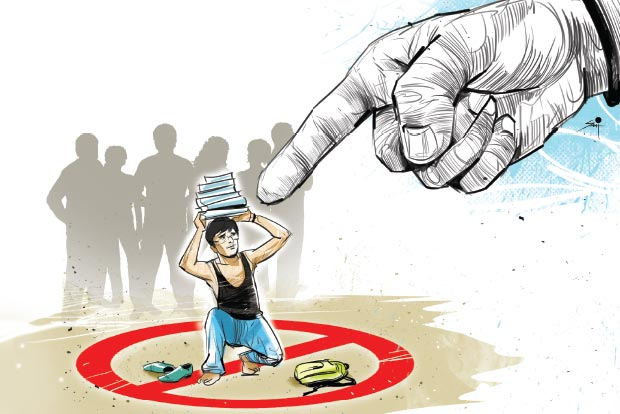

CULTURAL ACTIVITIES
Today’s education system is not just confined to academics but modern-day schools focus on imparting skills to students like personality development, confidence building, communication skills, etiquettes, etc. Cultural
activities come into play in instilling these skills in the students.Encouraging students to participate in cultural activities is the most effective way to inculcate personality-related skills. Unfortunately, many parents and students find
these activities as total waste of time and energy. However, the truth is entirely different as cultural activities enable students to gain confidence and understand their culture in a much better way.

SPORTS
Sports and health are heavily connected. The stress caused by exercise on the bones, muscles, ligaments, and tendons makes them strong and healthy. Exercise helps to burn calories in the body reducing chances of obesity.
Heart muscles performance and endurance improve, increasing its efficiency and reducing the risk of heart diseases. Exercise triggers the use of sugar in the blood. Glucose is converted into energy hence balancing the blood sugars. Sports also
help in the fight against cancer and other lifestyle diseases.

SOCIAL ACTIVITIES
Social Activities develop social skills and empathy—the outward-oriented dimensions of emotional intelligence (EQ). The interactions or conversations elicited by events helps students build relationships, understand
different perspectives and engage other cultures. Social Activities provide an opportunity to expand one’s social circle ,social events enables students to meet people who share common interests and individuals who can help them academically,
or even professionally. Relationship-building is a good habit that students need to learn because the world of work requires aptitude in negotiation, communication and, well, more networking.
© 2021 Ayeshkant Lenka.All Rights Reserved.

Depression Due To Ragging
Ragging initially bagan as an innocent tradition to get new students acquainted with each other but has gradually become a method by which anti-social elements of the institute asert their dominance on the campus. The victim of ragging suffer maximum in form of depression,isolation,demoralization and many other forms of detrimental effects on the personality.In extreme cases, the victim can even commit suicide due to the mental pressures that develop over a period of time.If ragging is not terminated at any point, the entire learning atmosphere is vitiated.There will be a constant fear and tension in the mind of every second student that she/he might be the next victim of ragging.The free and liberal atmosphere in learning tends to vanish in such colleges or institutes.

Depression due to less score
Stress, depression and anxiety are major and commonly reported issue among the college students. Mostly stress and depression among college youths are cause of their educational and academics performance. Usually stress, depression and anxiety are associated with decrease in grades which effects one way or another to student’s skills and ability to perform. Most common reasons for stress, depressions and other psychological problems are time stress, failure, tough competition, academic pressure, some other problems include emotional breakdowns due to inferior feeling for other for some life is not worthy. Many students face psychological problems in a college they must be guided and counselled properly to cope up with their emotional problems and some measures must be taken like forming student counselling centres or mentors and mentee programme must be made compulsory on all colleges. Also a health committee should be formed and professionals must be hired and college must conduct activities for student and teachers too for their psychological conditions.